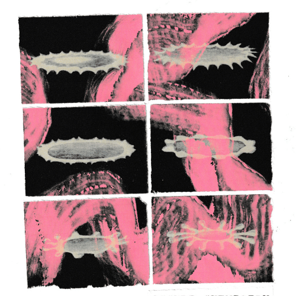

Occult Chemistry
In OCCULT CHEMISTRY we will explore the performance of the score as an alchemical process. Performers become magicians, and the space becomes a laboratory in which we will transmute words and images into action, much like turning lead into gold.
This two day intensive will include both theoretical and practical exercises, where we explore precedents before creating and interpreting our own scores. The hope is to encourage alternatives to traditional methods of interpreting text, by expanding our generative capacities.
Open to all skill levels, no prior experience necessary. The only requirement is that you come curious!
Dates: March 28th and 29th from 10am-1pm
Location: Chicago Danztheatre, in the Ravenswood Neighborhood in Chicago.
Note on the Location: Our meeting space is on the second floor, up a flight of stairs.
Notes on Pricing:
One ticket gets you access to both days of the intensive.